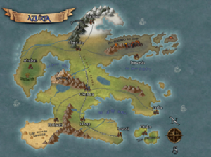

Bienvenue à toi amoureux du Jeux de rôle. Je vais te présenter mes parties de JdR à travers la campagne d'Auzria, univers créé et masterisé par Leorym. La campagne se déroule sur le continent d'Azuria et va mener nos différents joueurs dans des aventures remplies de mystères, de combats, d'égnimes et de complots.
Ici nous allons suivre les péripéties de 5 avanturiers (Téalia, Gwilani, Ezaek, Osborn et Archie) de leur rencontre jusqu'au temps présents de l'histoire. Vous retrouverez une descriptions de chacun d'entre eux dans la partie personnage.
Nos cinq protagonistes ne sont sont pas rencontrés de suite. Il y a eu quelques personnes qui ont fait parti de la compagnie des Gardiens d'Achillé avant l'arrivée de Gwilani et d'Osborn: Eilah, Zidrist et Nolan
L'histoire de la compagnie des Gardiens d'Achillé commence suite à une demande du Baron d'Irium à travers de tout le continent. Même si la compagnie ne portait pas encore ce nom, le regroupement d'Archie, de Téalia et d'Ezeak avec Eilah et Zidrist allait poser les bases de ce que deviendra par la suite les Gardiens d'Achillé.